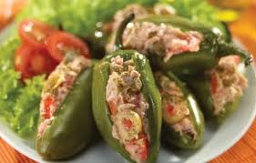

CHiles Rellenos

Ingredientes:
- 6-CHiles Verdes
- 1/2-cebolla picada
- 1-tomate picado
- 2-huevos
- 1-Libra de carne Molida.
- 2 1/2- cucharaditas de hierva buena.
- 1 1/2- Cucharada de salsa inglesa.
- 1 1/2 -cucharadas de salsa picante
sal al gusto.
- 2-Limónes
- 2-sasonadores de carne
- 1/2-Taza de agua
Procedimiento:
1-Asar los chiles, y dejarlos reposar
10 minutos en el jugo de limón
con una pisca de sal
2-Freir la carne junto a la cebolla,tomate y demas ingredientes hasta
que el agua se halla consumido.
3-Rellenar los chiles con la carne e ingredientes.
4-batir los huevos y freir los chiles envueltos de huevo batido.
Tiempo de preparación: 40 minutos.
Nivel de Dificultad: Medio.
Porciones: 6.